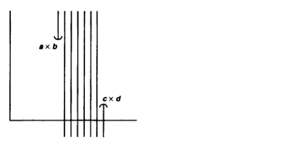
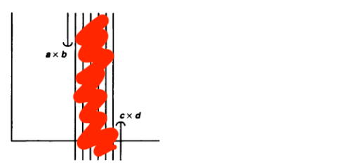

Munkres Introduction to Topology: Section 16 Problem 9
For this question, we have to prove that the dictionary order topology on the set $\mathbb{R} \ \times \ \mathbb{R}$ is equivalent to the product topology on $\mathbb{R}_{d} \ \times \ \mathbb{R}$,
where $\mathbb{R}_d$ is $\mathbb{R}$ in the discrete topology (every subset of $\mathbb{R}$ is open). We will call the order topology $T_O$ and the product topology $T_P$ in order to show equality
between these two sets, we simply have to prove inclusion, both ways:
$$T_O \ \subset \ T_P \ \ \ \ \ \ T_P \ \subset \ T_O$$
Let's start by proving that $T_O \ \subset \ T_P$. To do this, we choose some $U$ in $T_O$ and show that it is also in $T_P$. A general element of the basis of the order topology on $\mathbb{R}
\ \times \ \mathbb{R}$ will be and open interval of the form $(a \ \times \ b, \ c \ \times \ d)$. We need to show that this is in $T_P$. Well, in order to show this, we construct an equivalent
open set in $T_P$. Let us define (a, \ b), which is open in $\mathbb{R}_d$. Now, we can say that:
$$W_1 \ = \ (a, \ b) \ \times \ \mathbb{R}$$
is open in $\mathbb{R}_d \ \times \ \mathbb{R}$. Now, this is essentially equivalent to the "middle section" of the open set that we have defined in $T_P$. This makes a lot more sense if we
draw these sets out as pictures. If we draw the basis element of the dictionary order topology as:

Then the section that we just constructed in the product topology is the shaded region:

Ok, now all we have to do is "tack-on" the end pieces. Let us define $W_2$ and $W_3$ in the product topology:
$$W_2 \ = \ \{a\} \ \times \ (b, \ \infty) \ \ \ \ \ \ \ W_3 \ = \ \{c\} \ \times \ (-\infty, \ d)$$
These two sets are our "end-pieces", and are open in $T_P$. Now, we have:
$$W \ = \ W_1 \ \cup \ W_2 \ \cup \ W_3 \ = \ \{a\} \ \times \ (b, \ \infty) \ \cup \ (a, \ b) \ \times \ \mathbb{R} \ \cup \ \{c\} \ \times \ (-\infty, \ d) \ = \ (a \ \times \ b, \ c \ \times \ d)$$
Which is open in $T_P$, and is equivalent to the open interval that we defined in $T_O$. This means that every basis element of $T_O$ is in $T_P$, and since every open set in $T_O$ can be
generated by taking the union of basis elements, and because the union of elements in a topology must also be in the topology, it follows that union of basis elements of $T_O$, and therefore
all $U$ open in $T_O$ are open in $T_P$, so we have $T_O \ \subset \ T_P$.
Moving along, we now have to show inclusion in the other direction, that $T_P \ \subset \ T_O$. This argument is slightly more nuanced. Let us choose some basis element of the product topology
$T_P$, which we will call:
$$V \ = \ A \ \times \ (a, \ b)$$
Where $A$ can be any subset of the real number line $\mathbb{R}$. Now, we must construct an equivalent set in $T_O$. Let us choose two basis elements of $T_O$ in the form:
$$U_1 \ = \ (x \ \times \ y, \ z \ \times \ b) \ \ \ \ \ \ \ U_1 \ = \ (z \ \times \ a, \ w \ \times \ q)$$
Taking the intersection of these two open basis elements, we get another open set of $T_O$:
$$U \ = \ \{z\} \ \times \ (a, \ b)$$
Now, we define one more open set as the union of all $U_z$ as $z$ ranges across the set $A$:
$$W \ = \ \bigcup_{z \ \in \ A} \ U_z \ = \ \bigcup_{z \ \in \ A} \ \{z\} \ \times \ (a, \ b) \ = \ \Big( \bigcup_{z \ \in \ A} \ \{z\} \Big) \ \times \ (a, \ b) \ = \ A \ \times\ (a, \ b) \ = \ V$$
Since we are allowed to take infinite intersections of open sets and still get another open set. Thus, we have shown that every basis element of $T_P$ is in $T_O$, therefore $T_P \ \subset \ T_O$.
Since we have proven inclusion both ways, it follows that $T_O \ = \ T_P$. It is fairly easy to see that the product topology on $\mathbb{R}^2$ is coarser than $T_O$ and $T_P$. This can most obviously
be seen through the case of $T_P$, as $\mathbb{R}_d$ is finer than the standard topology on $\mathbb{R}$.